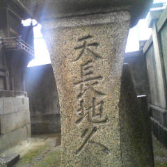

老子道徳経 第七章 韜光
天はひろびろとしているし、
地は果てしなくて、
ともに
長く久しくつづくもののようだ。
それというのも、天と地は
自分のために何かしようとしないで、
あるがままでいるからだ。
だから、長くいつまでも、ああなんだ。
タオにつながる人も
この天と地の在り方を知っているんで、
先を争ったりしない、そして
いつも、ひとの
いちばん後からついてゆく。
競争の外に身をおいて無理しないから、
身体は長保ちするわけだ。
つづめて言えば、
我を張ったりしない生き方だから、
自分というものが
充分に活きるんだ。
「タオ‐老子」
加島祥造 著より引用
撮影場所は尾道の艮（うしとら）神社の境内。
ロープウェー山麓駅のちょうど裏側。
韜光（とうこう）とは
光をつつみかくすコト。
韜の漢字の左側は韋（なめしがわ）
要するに、刃物をむやみに振り回すと危ないぞと。
ここでいう光とは、千「光」寺の光（鏡岩）のコトだろうか。
円形の鏡岩（陽）を山（陰）へ
天と地、方と円、方円。
方円と言えば・・・。
この寺には他にも、「天狗岩」や「梵字岩」等がある。
天狗様といえば、修験道（山伏）との関連がポイントだが・・・。
恐るべし真言密教(^^;
艮神社の神門（海側）の上部に、光る玉らしきマークがある。
神社の神門手前の石柱には、「永世不刋」「流光垂祚」の八文字が刻まれている。
と、すると、これは「朝日（旭）」か？
大山祗神社の東北の位置に建立された「艮」神社なのだろうか。
（因島にも艮神社はある。これ以上は言えない。）
夏至と日の出の方位の関係もあるとは思うが・・・。
夏至とは一年でもっとも太陽が出ている時間が長い日である。
それは、天孫族サイドにとって重要な意味を持つのではないか。
ウェブ（蜘蛛の巣）で、”比叡山 夏至”で検索した・・・。
横殿神社（跡地）と光明坊、金蓮寺のライン。
そして、さらにその先には・・・。
分度器で測ると、約４８度を示す。
何だろう。
易の八卦とは
乾（けん）
兌（だ）
離（り）
震（しん）
巽（そん）
坎（かん）
艮（ごん）
坤（こん）
「艮」は数として七を、自然では「山」、先天易では西北、後天易では東北に配当される。
艮を陽（―)と、陰(--)の記号の組み合わせで表現すれば
―
--
--
ゼロではなく一からはじまるので計算機の二進数表記とは微妙に異なる。
方位や暦にネガティブなイメージを持っている人が多い。
だが、当時の海に生きる民、農業、墾田、土木等の分野では重要で実務的なスキルだった。
死活問題（詰碁ではなくて）だった。
そう思う。
参考文献 鏡と矛 木村三千人著